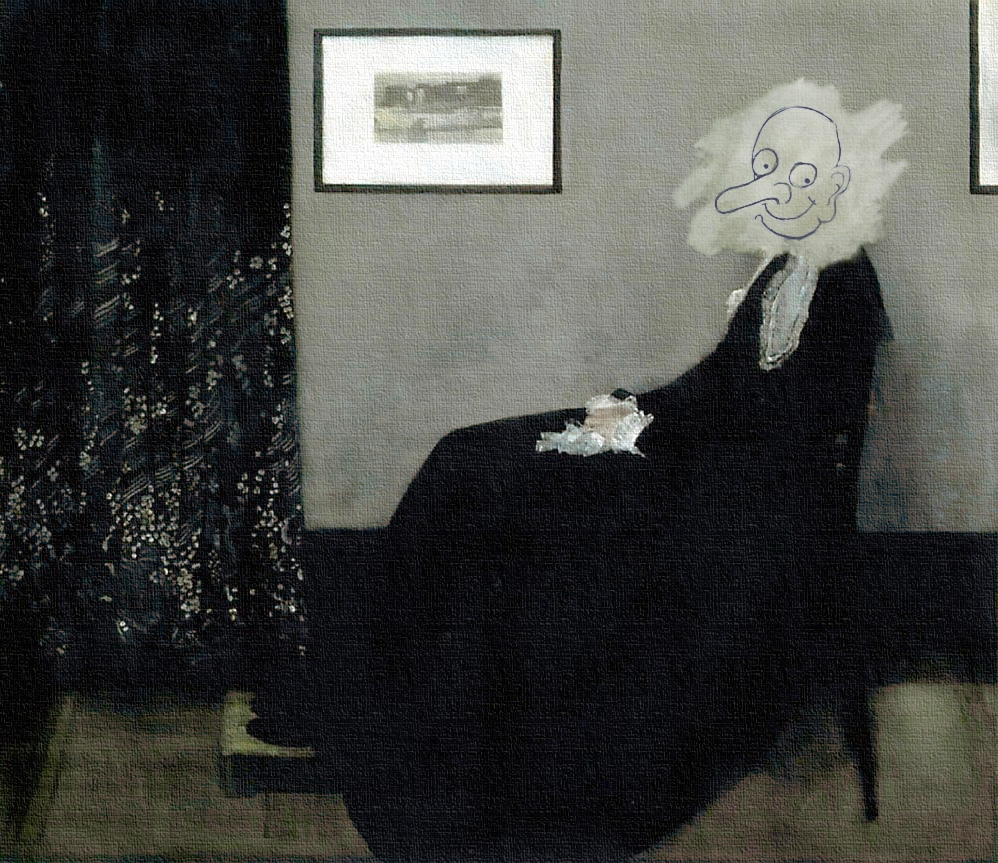

About Me

I make websites. As a software developer I have skills in Java web development, R statistical computing, Python, and more.

Software Development Projects
Robotics
Web development was just the beginning for me.
I knew I wanted to learn robotics and artificial intelligence from the start, but web development was the easiest place to start.
After graduating from We Can Code IT, I learned a lot about robotics. The first project I'm working on is a biomimetic hand with pressure sensitive skin.
Contact Information
E-Mail: Eric.Braden.Developer@protonmail.com LinkedIn: https://www.linkedin.com/in/eric-braden/